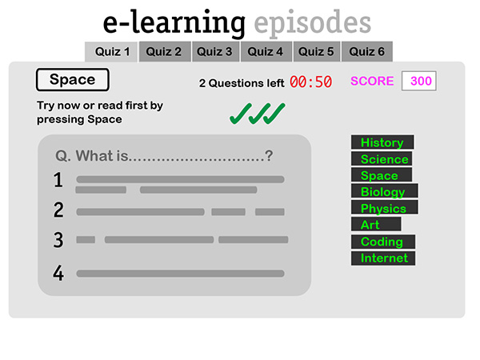
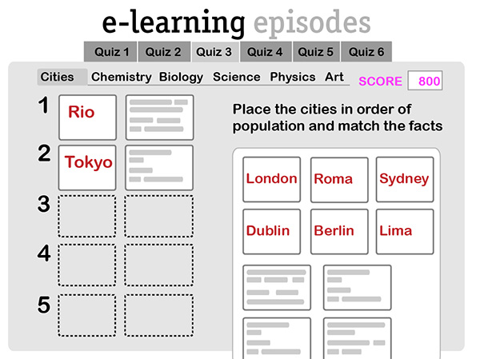

Wireframes
 e-learning episodes
"A critical analysis of e-learning epistemologies using the EBI and VARK frameworks" is the title of my MSc Web Technologies dissertation. The 3 epistemologies, or learning theories, that were tested were Objectivism in Quiz 1, Constructivism in Quiz 2, and Connectivism in Quiz 3.
The application e-learning episodes was created in order to test these with a small study group who were eye-tracked, and questioned to gather data on motivation and engagement levels. Of those tested, Connectivism was found to be the preferred epistemology.
Technology used:
HTML5, CSS3, Adobe CS.
JavaScript and JQuery for the quiz functionality.
JQueryUI for the drag and drop functionality.
AngularJS for the display of video channels.
Various plugins for the Chatroom, the Forum, the Share buttons, and the AngularJS Notepad.
The code
Wireframes created with AdobeCS appear after the screen shots.